Intelligent systems. Bold results.
I help businesses get more customers, convert more leads, and take the repetitive half off their plate. No tech jargon — just systems that work.
Fixed price or revenue share. Code, documentation and data stay yours. No lock-in, and nothing to log into.

Seven systems. Most companies need one.
I go in, learn how the work is really done — however narrow it is — and build a system that does it on its own, reliably. Most of that work is easy and repetitive, which is exactly why it should not be a person on their eighth hour. You do not need all seven. Most people start with the first, feel the difference within a week, and come back for the second.
Three workflows, drawn.
These are not illustrations of an idea. Each one is a real flow: what comes in, what the system reads from it, what it writes back. The same drawings are what you get in the proposal.


Four steps, from idea to running system.
Not because anyone else is bad at this. Because a template was never written for your week, your systems, or the way you work.
You own it.
The code sits in your own accounts, the documentation is written for you, and the data stays with you. If we stop working together, nothing breaks and nobody has to ask permission to keep it running.
Plain language, no theatre.
You will not get a slide deck about how AI is changing everything. You get a screen that does the job, and a number to call when it does something you did not expect.
Scope before price.
We agree on exactly what the system does before I quote it. If the scope changes, the price changes with it, in writing. No surprise invoice in month three.
One project, one price. This is what a typical automation looks like.
The order that takes two hours to place anywhere else, itemised here so you can see what you are paying for.
- 1 × Setup: invoice to ledger, installed
- 1 × Agent answering from your own documents
- 4 × Connections (CRM, ERP, mail, storage)
- 1 × Running and monitoring, 12 months
Total: 30,100 DKK · excl. VAT · delivered in 3 weeks
The code, the documentation and the data are yours. I build it, you own it.
Not a trial, not a rented platform, not a login I keep the key to. If you decide to take it in-house, the handover is a folder with everything in it and a call where I walk you through it.
Three ways to pay. One of them will fit.
I would rather you pick the one that makes sense for your week than the one that sounds biggest.
We agree on what the system does, and it costs that. Best for one clear problem with a clear finish line.
- Written scope before work starts
- Fixed price, change log if scope moves
- Documented handover
A percentage of what the system actually brings in. Best when the value is real but hard to price up front.
- Smaller upfront cost
- I stay on it while it runs
- Reporting on what it produced
I build the product, you bring the market and the customers. We split what comes in.
- For early-stage products
- Reduced cash retainer
- Agreement in writing, up front
All prices exclude VAT. Every engagement starts with a free 30-minute call, and I will tell you on that call if I am the wrong person for it.
Common questions about how I work.
What types of businesses do you work with?
If any of these describe you, we should talk:
- You don't have enough data to make informed decisions about marketing, hiring or process optimisation.
- You run a small or mid-size company.
- You want to develop an app or a system for other clients or for your own users. I was part of the team that built texttoquant.com, which is listed in Claude's official connector marketplace.
- You have processes that are costly in time or money.
- You want to optimise the workflows of your team or your own work, so you can get more done in less time and spend more time with your family and friends.
- You have an idea for an app or a software project you want to launch, but no idea where to start. If I like the project, and I can see real value in what you bring to it beyond the loose idea, I could come on as technical cofounder.
How long does a typical automation project take?
It depends entirely on what we're building. If it's an AI agent for a specific niche problem, the timeline follows the complexity of the task — I won't spend more time than the job needs. That could be one or two days, or one or two months. If you want an actual assessment, call me or write with your specifics. We don't do corporate bull-shit, so I try to be as transparent as possible.
What if I don't want to pay upfront?
That's fine — depending on the project, we don't need upfront payment at all. If I'm building software for the company, expect to pay a deposit and then a payment against each agreed milestone. That's very normal. What I also offer is a performance-based option: taking a percentage of the company's income over a defined period, instead of a fixed fee. This is easy to arrange, and it's what I usually do for projects where I can help you get significantly more out of the process — rather than delivering the product and then leaving.
Do you provide ongoing support after project completion?
Absolutely — if you have the need for it. My goal is always to hand the work over in a way that fits you, so you're not dependent on me. That said, there's usually a period of one to three months, depending on the project, where I help out with further iterations, new features, or maintaining the project until you've found someone else to take it on. Most of the systems I build maintain themselves with very little input, so it shouldn't be a problem at all. If you want a "tech person on speed dial", that won't be free forever — but I'm glad to help smaller businesses with tasks that aren't too time-consuming.
What's included in a free consultation?
You tell me some of the frustrations you're running into. I ask questions to understand your processes and your business. Then I give you clear, actionable advice and solutions — free, and they don't necessarily involve my services. You'd be surprised how far you can get with free tools, without paying a third party to come into your business and make changes or additions. No sales pitch, and absolutely no commitment.
Can you integrate with our existing software?
That's kind of the whole point. I wouldn't want to fix what isn't broken — we can always just optimise what you're already doing. If I do see that a process you're using is unnecessarily expensive or time-consuming, I'll tell you what I'd recommend changing.
What's the typical ROI for automation projects?
That's a case-by-case question, and there isn't a single honest number for it. The return is usually fairly linear. I've freed up engineers who were doing repetitive simulation work by giving them a specialised agent trained to do exactly that, so the engineer could spend their time on work that matters more. I've also built plenty of agent workflows that simply save two to four hours of administrative or documentation work. So it depends on the project, and on the time and capital cost of the task being automated. And I'm not out to replace human workers. I know most company owners don't want to fire their people — they want them doing more meaningful and important work.
Do we need technical expertise to use your solutions?
Not at all. It would be a complete failure on my part to leave you with a system you don't know how to operate. I always focus on making the tool genuinely easy to use for the client. If it can't be easy, I'll make sure there's proper documentation and procedures, and I'll take the time to train you personally. I've never had anyone have an issue with this. I design systems that make sense to real humans, not just other developers.
How do you ensure data security and privacy?
I treat your data like it's my own, because a data breach would ruin my reputation overnight. Data security and privacy isn't actually that hard. Most problems come from human error and from keeping data in places that can be compromised — I don't do that. I follow the straightforward GDPR rules and best practices, in line with the European Data Protection Board's guidance for small businesses. The core of it: the right technical and organisational measures for the risk, protecting the confidentiality, integrity and availability of your data, with regular reviews and documented procedures. I'm also not some faceless corporation that can blame the issue on a random intern or hire. In most cases I try to get the data and the finished system hosted and stored by you — I help you do it, but that means you're responsible for following best practices. Rotating your passwords. Not giving access to devices with fingerprints or keys to important systems. Basic stuff.
Reference: European Data Protection Board — Secure personal data (guidance for small businesses).
Can you work with our existing development team?
Definitely. I can either work alongside your team or handle everything independently, whichever makes more sense for your situation. I've done both, and I'm pretty good at not stepping on anyone's toes. Personally, I've only worked with mid-size teams of five to eight people, on development projects or when training a team to use specialised software. If you have something else in mind, I'm sure I'm up for it — I'd just want the details cleared first.
What happens if we need changes after the project is complete?
I cover bug fixes and small tweaks for a reasonable period. That's just good business. For bigger changes or new features, we can work out a fair rate. If you've been a client of mine, I always want to make sure you're taken care of.
Are you going to share my business insights and secrets with others?
Of course not. I won't disclose anything you tell me, or put in writing, that you don't want shared. If it's a system I personally thought up, drafted, tested and built for your company, I will use it as a starting point if another client later needs something similar. But I will strip out anything that could point to your company having that solution. The reason I don't disclose which clients I work with, or which solutions I've built, is this: if any of my systems were compromised, or a library or tool I'm building with, knowing my clients would become an attack vector. That's why I take this kind of privacy very seriously. Call me paranoid — fair.
Tell me what is slow in your week.
The first conversation is free and low-pressure. Write to me and I will reply within one working day — and tell you straight away if I am not the right person for it.